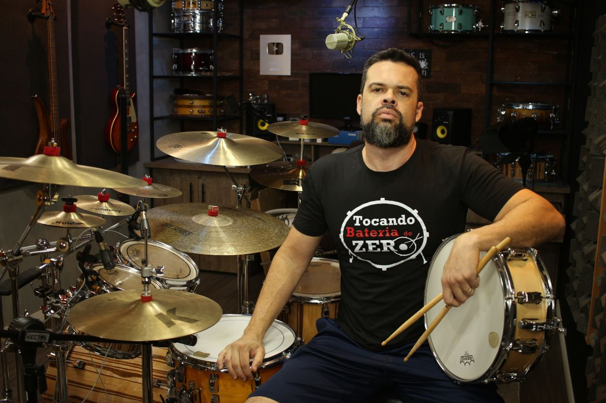

Do primeiro toque na baqueta às viradas lineares e ao gospel chops: videoaulas em ordem, partitura em PDF, MP3 para aplicar e correção dos seus vídeos feita por mim, direto.
Você já assistiu dezenas de vídeos de bateria. Aprendeu uma virada aqui, um ritmo ali. Mas na hora do culto trava: a virada não entra no tempo, o andamento corre, e a dinâmica não acompanha o momento da música.
Não é falta de talento. É falta de sequência. Ninguém aprende a tocar juntando pedaços fora de ordem — aprende seguindo um caminho, do primeiro toque até o avançado.
Sabe alguns ritmos, mas não consegue tirar uma música inteira sozinho.
A virada sai, mas você perde o tempo quando volta pro ritmo.
Coordenação entre mãos e pés ainda é o seu maior obstáculo.
Sua igreja precisa de baterista e você quer estar pronto para servir.
Nunca leu uma partitura de bateria e acha que isso é para poucos.
Já tentou escola de música e sentiu que evoluiu pouco perto do que investiu.
O Tocando Bateria do Zero é dividido em cursos: cada um resolve uma peça da sua evolução — ritmos, viradas, rudimentos, técnicas de mão, técnica de pés, dinâmicas, partitura, tribais, worship, gospel chops, afinação. Você começa pelo que precisa agora e vai somando.
Nada de teoria solta. Você toca no primeiro dia e aplica em música de verdade na primeira semana.
Explicação clara, passo a passo, no ritmo de quem está aprendendo — o motivo número 1 pelo qual meus alunos compram e voltam.
Você grava o exercício, me envia e eu analiso e corrijo. Não é equipe, não é IA, não é fórum. Sou eu.
Cada curso gravado do começo ao fim, em sequência — sem pular etapa.
01O material escrito de tudo o que você toca na aula, pronto para imprimir e estudar.
02As músicas para você aplicar o que aprendeu. Disponível em cursos selecionados
03Você pergunta e eu respondo. Sem fila, sem atendente.
04Grave o exercício, me envie e eu aponto exatamente o que ajustar — postura, tempo, dinâmica. É a parte que mais acelera a evolução do aluno.
05São 34 cursos que cobrem a formação completa de um baterista. Cada um pode ser comprado separadamente — ou você leva tudo de uma vez no pacote completo.
Lista e nome comercial de cada curso a validar com o Mateus
Boa parte dos alunos aprende os ritmos já na primeira aula e toca a primeira música na primeira semana. Cada pessoa tem o seu tempo — alguns levam um pouco mais. Mas todos que seguem o método chegam lá. A virada de chave costuma acontecer nos primeiros meses, e muitos já sentem diferença nas primeiras semanas.
Aluno aprendeu a primeira música completa.
Aluno tocou na igreja pela primeira vez.
Aluno aprendeu o que não tinha aprendido em meses de escola de música.
Resultados relatados por alunos. O tempo de evolução varia de pessoa para pessoa.

Toco bateria há 29 anos e dou aula há 25. O Tocando Bateria do Zero existe há 10 anos, e começou no YouTube com um objetivo simples: ensinar quem nunca tinha encostado numa baqueta a tocar de verdade.
De lá pra cá, mais de 12.500 alunos passaram pelos meus cursos on-line. E todo o suporte continua passando por mim: sou eu que respondo as dúvidas, assisto aos vídeos que os alunos me mandam e corrijo.
Meu propósito é esse: ensinar bateria de forma prática, clara e financeiramente acessível.
“Irmão, suas aulas são as melhores. Como não te conheci antes? Em semanas evoluí o que em meses não evoluí.”
“Que dinâmica boa essa que você usou! Descomplicou o que era complicado para mim. Tô na quarta aula já do módulo 1 de partitura, ansioso pelo próximo.”
“Só vim parabenizar os cursos, muito de boa qualidade. Aprendi duas viradas muito massas até agora; o curso de gospel chops e viradas lineares está muito bom.”
“Com apenas os primeiros passos eu aprendi a tocar reggae no seu curso. Nem estou em casa para tocar na bateria, estou estudando no pad e fazendo bumbo no chão — e já com variações de bumbo.”
Escolha o curso que resolve o seu problema de agora. Videoaulas, PDF com partitura e suporte direto comigo.
| 3 cursos | R$ 15,00 de desconto |
| 6 cursos | R$ 60,00 de desconto |
| Acima de 6 cursos | R$ 10,00 off em cada |
A formação inteira, do primeiro toque ao avançado: todos os cursos, todos os PDFs com partitura, os MP3 de aplicação e o suporte direto comigo.
Link de checkout da Hotmart
Entendo — e é por isso que você não precisa começar por ele. Escolha um curso, veja se a minha didática funciona para você e vá somando. Quem leva mais cursos paga menos por cada um.
Comprou, entrou, assistiu, baixou as partituras e treinou. Se em 7 dias você achar que não é para você, pede o reembolso na Hotmart e devolvemos tudo. Sem burocracia.
Comece hoje pelo primeiro ritmo. Em uma semana você já está tocando música. E eu estou do outro lado para corrigir o que precisar.